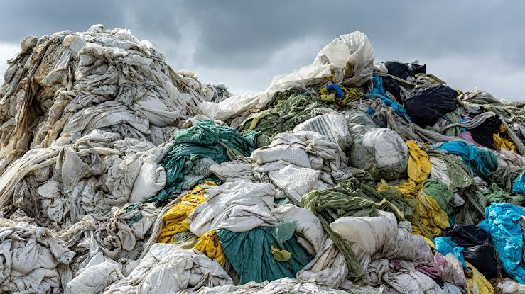
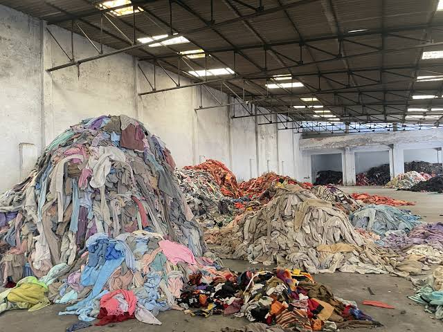

Textile waste refers to discarded fabrics, fibers, and clothing, including old garments and manufacturing scraps. It is divided into pre-consumer waste, produced during manufacturing, and post-consumer waste, discarded by consumers.
Around 92 million tons of textile waste are generated each year, largely due to fast fashion and its inexpensive, mass-produced clothing. Much of this waste ends up in landfills, where synthetic materials break down slowly and may release pollutants and chemicals. Only about 1% to 15% of textiles are recycled into new materials.
Materials discarded during textile production, including fabric scraps, cutting-room leftovers, defective products, and excess or unsold inventory.
Common Forms: Fabric scraps and off-cuts; yarn and fiber waste; defective or unsold products.
Unlike post-consumer waste, pre-consumer waste is collected before reaching retail shelves. It is generally clean, has not been heavily used, and is easier to sort by color and material type.
Characteristics: This waste is usually cleaner, easier to sort, and made of known materials. However, larger or harder scraps may need to be mechanically shredded or torn before recycling.

Materials discarded by consumers after use, including worn-out or outgrown clothing, old bedding, curtains, carpets, and shoes.
Common Forms: Unwanted or damaged clothes, footwear, towels, bed sheets, curtains, carpets, and other household textiles.
Characteristics: These items often contain blended fibers and may not have care or material labels. Before recycling, components such as zippers, buttons, and other hardware usually need to be removed by hand.
Textiles that are used and discarded in commercial, institutional, or large-scale workplaces.
Common Forms: Old hotel sheets and curtains, commercial carpeting, and uniforms worn by company or military personnel.
Natural Fibers: Obtained from plant or animal sources, including cotton, wool, silk, and abaca.
Synthetic Fibers: Manufactured from petrochemicals, such as polyester, nylon, and acrylic. These fibers are non-biodegradable and are major sources of microplastic pollution.
Massive Scale: The global fashion and textile industry produces approximately 92 million tons of textile waste each year.
Fast-Fashion Drivers: Inexpensive, mass-produced clothing has increased production while shortening the average lifespan of garments.
Environmental Impact: Most discarded textiles are sent to landfills or incinerated. Synthetic fibers break down very slowly and may remain in landfills for hundreds of years.
Low Recycling Rates: Less than 1% of textile waste is recycled into new clothing, partly because blended fabrics are difficult to process.